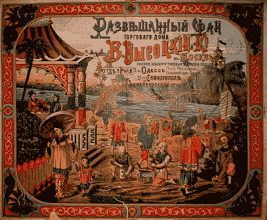

Первое упоминание о чае восходит к глубокой древности. О том, как был обнаружен дикорастущий чай, рассказывают легенды Китая, Индии, Японии.
По одной из них, чай возник во времена творения Земли и Неба, его связывают с именем Государя Солнца Янь-ди. По другой, император Южного Китая Чен Нунг (III тысячелетие до н.э.) однажды попробовал напиток, который случайно получился из листьев, нечаянно попавших в кипяток. Напиток оказался настолько ароматным и вкусным, что император приказал собрать и сохранить эти листья и издал указ о применении его по всей стране. Исторические памятники подтверждают, что чай был известен в Китае уже в период троецарствия (220 - 280 годы). Возделывание его как культуры относится к 350 году.
Индусы считают, что чайный куст случайно обнаружил принц Бадхидхарма, путешествуя по Южному Китаю.
По японской легенде чайный куст вырос на том месте, куда упали веки принца Дарумы, которые он обрезал, чтобы не заснуть во время медитации. С этого куста последователи Дарумы собрали листья и приготовили бодрящий напиток. Долгое время считалось, что кусты — единственный вид этого растения.
Китайские философы говорили, что чай лучше вина, так как, укрепляя и взбадривая, он не вызывает опьянения, и лучше воды, так как не является переносчиком инфекции. Вначале чай употребляли правители и священнослужители как целебное питье, снимающее усталость, укрепляющее силы и зрение, или в составе мазей, например от ревматизма. Использовать чай как напиток на его родине начали в V веке. Чай ценился очень высоко — императоры дарили его своим сановникам в знак поощрения. В VI веке это любимый напиток знати. Но к Х веку чай уже стал национальным напитком в Китае и, соответственно, предметом торговли.
В Европу чай был ввезен в XVI — XVIII веках португальцами и голландцами. Укоренившись в Нидерландах, употребление этого напитка превратилось в традицию послеобеденного чаепития и распространилось через Атлантику до Нью-Амстердама.
В 1664 году купцы Ост-Индской английской компании привезли в дар королю два фунта чая. Дар был принят, напиток оценен по достоинству, и началось триумфальное шествие чая, сначала как предмета роскоши, доступной богатым и знати, а значительно позднее — как традиционного напитка широких слоев. Он стал доступен горожанам лишь с конца XVIII века, после снижения налога на чай, но для большинства оставался еще слишком дорогим. Чай пили в кафе (первое из них принадлежало Томасу Твиннингу, ткачу по профессии), где при недостатке разменной монеты в качестве сдачи можно было получить чайные талоны, которые принимались магазинами как обычное средство платежа.
В 1793 году лорд Макартни вывез из Китая семена чая и передал их в Калькуттский ботанический сад для изучения и культивации. Индия, бывшая тогда колонией Британской империи, активно развивала производство чая. В 1860 году было реализовано уже около 2 тыс. тонн. Теперь встал вопрос о темпах перевозки.
По бескрайним морским просторам неслись чайные клиперы — быстроходные парусники с ценным грузом. Традиционными стали чайные гонки, сулившие приз победителю. Известен случай, когда три клипера – "Ариэль", "Тайпинг" и "Серика" — синхронно прошли всю дистанцию длиной 25744 км и борт о борт вошли в гавань.
На Яве, Суматре, во Вьетнаме чай начинают разводить в первой половине XIX века, во второй половине — в Африке и Южной Америке, в начале ХХ века — в Северной Италии и Южной Швейцарии. В настоящее время разведение чая освоено и в Австралии.
Вероятно, русские купцы и путешественники на Восток могли узнать о чае еще во времена Орды. Но документальная история русского чая начинается только 5 сентября 1638 года, когда из Томска, тогда главного центра русской колонизации в Сибири, отправилось посольство к монгольскому Алтын-хану. Монголам чай был известен как минимум с эпохи китайской династии Сун, когда в начале XII века захваченный кочевниками император Хуйцзун, неудачливый правитель, но утонченный даосский философ, создатель чайной церемонии и автор знаменитого в Китае «Трактата о чае», находился в плену на границе Монголии и Маньчжурии. Русский посланник, боярский сын из Томска Василий Старков долго отказывался принять в дар неизвестное ему «китайское зелье», но монголы смогли обосновать ценность подарка. Старков неуверенно объяснил в письменном докладе томскому воеводе боярину Андрею Ромодановскому: «Не знаю, листья ли то какого дерева или травы. Варят их в воде, приливая несколько молока». Князь Ромодановский был одним из ближайших бояр первого русского монарха из династии Романовых. На следующий год он вернулся в Москву, доставив ко двору царя Михаила Федоровича подарки Алтын-хана, включая и китайский чай. Так напиток впервые попал в наши края. Известно, что царь Алексей Михайлович, простудившись в январе 1665 года, лечился заваренным чаем. В конце XVII века чай уже продавался в аптеках Москвы именно как лекарство и тонизирующее средство.
В 1689 году Россия заключила первый договор с Китаем, из Москвы в Пекин стали отправляться казенные караваны с пушниной, которую меняли в том числе на чай. Систематическая торговля с самым населенным и богатым государством мира того времени рассматривалась в Москве как важнейший источник дохода государственной казны. Уже к концу царствования Петра I из Китая в Россию ввозилось примерно 3 тысячи пудов (48 тонн) чая ежегодно.
В 1727 году Россия и Китай подписали соглашение о беспошлинной пограничной торговле, которая осуществлялась на современной границе Монголии и Бурятии в городке Кяхта. И за десять следующих лет ввоз чая в Россию вырос на порядок — до 30 тысяч пудов в год.
На протяжении XVIII века масштабы ввоза чая постоянно растут: если в 1749 году чая закупили на 4 тысячи рублей, то в 1780 году уже на 28 тысяч, а в 1792 году на 399 тысяч рублей. К концу столетия чай прочно вошел в быт верхних слоев русского общества, дворянства и купечества. В начале царствования Александра I самые дорогие сорта чая продавались в России по цене 10—12 рублей ассигнациями за фунт, примерно как две-три крестьянские коровы. По воспоминаниям приближенных, император Александр I ежедневно с утра «кушал чай, всегда зеленый, с густыми сливками и поджаренными гренками и белым хлебом». Широкие слои народа приучились пить чай сначала в городах Сибири, затем в Поволжье и Москве. Как писал один очевидцев начала XIX века: «Другие города, строго преданные дедовским обычаям, нескоро знакомились с роскошью, довольствовались сбитнем, отваром мяты, липового цвета или другой какой скромной доморощенной травы с медом. Петербург пробавлялся кофеем, а Москва деятельно пристращалась к чаю».
31 декабря 1821 года выходит императорский указ Александра I «О дозволении производить продажу чая в трактирных разного рода заведениях с 7 часов утра до 12 часов пополудни и держать в ресторациях чай». С этого момента в крупных городах страны, особенно в Москве, начинается настоящий бум чайного потребления. В 1840 году в Москве насчитывается уже 46 специализированных чайных магазинов. В 1842 году в Россию ввезено чая 6 млн фунтов, то есть почти две с половиной тысячи тонн. Уже к 1846 году в Москве работает более 200 чайных трактиров, где ежегодно выпивалось 82 тонны чая на сумму более 515 тысяч рублей серебром. Именно Москва становится законодателем моды на чай в остальной России.
При Николае I чай пьют уже все слои русского населения — от богатейшей аристократии до беднейшего крестьянства. В личных бумагах Николая I чай фигурирует как необходимый и важнейший элемент быта. «Посадить в Алексеевский равелин, дав бумагу и содержа строго, но снабжая всем, что пожелает, то есть чаем» — одна из собственноручных записей императора в ходе следствия по делу декабристов. Повсеместное увлечение чаем отметил и знаменитый маркиз де Кюстин, самый внимательный недоброжелатель николаевской России: «По-прежнему воняет кислой капустой и смолой. В этом закутке, душном и темном, поскольку двери в нем низкие, а окошки не больше чердачных, вижу я старуху, разливающую чай четырем-пяти бородатым крестьянам, которые одеты в бараньи шубы мехом внутрь. Люди эти, по преимуществу низкорослые, сидят за столом; их меховые шубы выглядят на каждом по-разному, у них есть свой стиль, но гораздо больше от них вони … На столе сверкает медный самовар и заварочный чайник. Чай и здесь такой же хороший, умело заваренный … Это всего лишь один из тысячи контрастов, поражающих путешественника на каждом шагу … Русские, даже самые бедные, имеют дома чайник и медный самовар и по утрам и вечерам пьют чай в кругу семьи … Деревенская простота жилища образует разительный контраст с изящным и тонким напитком, который в нем пьют». Русские крестьяне в описании французского маркиза пьют чай из самовара. Этот сложный для того технологического уровня «прибор» в России впервые появляется на Урале в середине XVIII века, а в 1778 году в Туле оружейники Иван и Назар Лисицыны в свободное от производства армейских ружей время начинают регулярно делать медные самовары. К середине века в Туле работает уже 28 специализированных фабрик, общий выпуск самоваров достигает 120 тысяч штук в год.
Русско-китайская торговля шла через городок Кяхта на границе с Монголией. Сейчас это небольшой райцентр в Бурятии, а тогда город, именовавшийся Москвой на Востоке, Столицей чая или Городом миллионеров. Собираемые в Кяхте пошлины давали в разные годы от 20% до почти 40% всех таможенных сборов Российской империи.
В Кяхту из Китая чай приходил через Монголию верблюжьими караванами. В XVIII веке товары из Китая доставлялись к Уралу на лодках по притокам сибирских рек, но такой путь был медленным. К началу XIX столетия была построена большая часть Сибирского тракта (Москва — Казань — Пермь — Екатеринбург — Тюмень — Томск — Иркутск) и конные повозки стали перевозить от 70% до 90% всех грузов, перемещаемых чрез Сибирь.
Существовала корпорация из тысяч людей, занимавшихся упаковкой и перевозкой чая. Он перевозился в «цыбиках» — корзинах, плетенных из травы или камыша. Внутри чай был тщательно завернут в китайскую бумагу, наиболее ценные сорта заворачивались в свинцовую фольгу, о ядовитых свойствах металла тогда еще не знали. Специальные «ширельные артели» обшивали цыбики коровьей или конской кожей, шерстью внутрь. Стандартный цыбик весил около двух пудов и содержал примерно 20 килограммов чая. Транспортировка по Сибири осуществлялась в основном зимой, обычно пятеркой связанных повозок, которыми управлялся один извозчик. Такие связки объединялись в огромные обозы, существовали целые артели ямщиков, специализировавшихся именно на чае. Расстояние от Кяхты до Москвы в 5930 верст проходили за 70 — 80 дней по маршруту Кяхта — Иркутск — Томск — Тюмень — Казань — Москва. В зависимости от погоды и состояния дорог длительность перевозок могла увеличиваться. За такой перегон «дальнобойщик» зарабатывал немалые деньги, не менее 50 рублей, а наиболее удачливые и сотню. В Сибири в уездах, прилегавших к «Чайному пути», извозом занимались свыше 10% трудоспособного мужского населения. Помимо Москвы основные караваны шли на Нижегородскую и Ирбитскую ярмарки. Но вся чайная торговля России контролировалась преимущественно московским купечеством. На Нижегородской ярмарке цыбики чая складировались в пирамидальные штабеля, так называемы бунты в несколько человеческих ростов. Отсюда чай уже расходился по всей России. Например, в 1834 году московские купцы продали в Польшу чая на 200 тысяч рублей серебром. «А теплую водицу чай назло нам выдумал Китай "»
В начале XIX века чай составлял 4% стоимости всего импорта в Россию, доля вин и прочего алкоголя составила 6,5%. Но уже к середине XIX столетия доля чая в стоимости российского импорта увеличилась вдвое до 8%, обогнав расходы на покупку алкоголя. Долгое время царское правительство прямо запрещало покупать китайские товары за серебро. Бумажные российские ассигнации китайцы не принимали, и российским купцам приходилось выменивать китайские чай на другие товары. В начале XIX века это были меха, добывавшиеся тогда в основном уже на Аляске, и прусское шерстяное сукно, которое везли транзитом через Сибирь. Лишь в 1854 году происходит либерализация чайной торговли: царское правительство разрешает покупать китайский чай за серебряную монету и перестает контролировать закупочные цены. После победы англичан в первой «опиумной войне» с Китаем открывается внутренний рынок этой страны. Если в 1851 — 1960 годах в страну было ввезено 372 тысячи пудов чая, то в следующем десятилетии эта цифра удваивается, а еще через десятилетие удваивается снова, достигая уже 1480 тысяч пудов. Бурное распространение некогда заморской привычки встречает в обществе и неприятие. Вплоть до конца XIX века регулярно появляются брошюры, в которых чай объявляется вредным, «бесовским» напитком, который разоряет русскую казну, приводит к пожарам (из-за использования самоваров) и разрушает обычаи предков. Убежденным противником чая был один из самых почитаемых православных святых Серафим Саровский. «Даже, сколько возможно, удерживай и от чаю» — одно из его распространенных нравоучений. В среде «славянофильского» дворянства были популярны стихи тверского помещика и популярного публициста Александра Бакунина, отца известного анархиста: «А тёплую водицу чай назло нам выдумал Китай "» В 1874 году выходит брошюра «Чай и вред его для телесного здоровья, умственный, нравственный и экономический» про «иноземный напиток, который может разорить народ из-за своей дороговизны», является причиной бессонницы и способен довести до эпилепсии. Она неоднократно переиздается. Дольше всех от чая воздерживались старообрядцы, у Даля даже есть ряд их античайных пословиц и присказок, например: «Кто пьет чай, тот спасения не чай». Но к началу XX века и ревнители старой веры не устояли перед этим горячим напитком.
В начале XIX века британцы столкнулись с проблемой утечки серебра в Китай в обмен на чай, как и Российская империя. Торговля опиумом не компенсировала всех расходов и уже в 1824 году англичане завезли саженцы чая в свои колонии на Цейлоне. После 40 лет упорных опытов им удалось начать промышленное производство чая, уже к концу XIX века экспорт английского чая из Индии, Цейлона и Кении обогнал по объемам и стоимости импорт из Китая. Британский спрос на чай родил индустрию «чайных клиперов» — вершину развития парусных судов. Товары из Китая в Лондон доставлялись за три-четыре месяца. Срок сопоставимый с перемещением русских конных обозов от границы Китая в Москву, но Сибирский «чайный тракт» был раза в четыре короче по протяженности, а грузоподъемность «чайных клиперов» на порядок больше самых больших караванов. Неудивительно, что в XIX веке лучшие сорта цейлонского и китайского чая, доставленные морем через Лондон, стали появляться и в России. Однако до 1917 года 90% выпитого в России чая закупалось прямо в Китае. К началу XX столетия Россия стала главным потребителем китайского чая.
В Россию чай поступал через северные провинции Китая, где на местных диалектах он именовался «ча» — отсюда и русское слово «чай». Англичане изначально покупали этот товар в приморских провинциях Китая, на диалектах которых он именовался «тэ» — отсюда английское «tea». Идея наладить собственное производство чая в России возникла даже раньше, чем в Англии. Еще в 1792 году в одном из петербургских журналов появилась статья лифляндского дворянина Сиверса о том, «как произращать чай в России», где предлагалось закупить чайные кусты и создать чайные плантации в районе Кизляра, в то время самой южной точке Российской империи. Первый чайный куст в нашей стране был высажен в Никитском ботаническом саду в Крыму сразу по окончании наполеоновских войн, но до конца XIX века все попытки выращивать чай оставались экспериментальными. В 1893 году разбогатевшие на торговле китайским чаем купцы Поповы организовали чайную плантацию в Аджарии, недалеко от Батуми. Из Китая в Грузию завезли несколько тонн семян чайных кустов и десяток китайцев во главе с известным на юге Китая мастером-чаеводом Лю Чжэньчжоу. Русским купцам и китайскому мастеру удалось вырастить вполне качественный чай, однако местное производство не выдержало конкуренции. За первые десять лет производства чая в Грузии было собрано около 5 тысяч тонн чайного листа (для сравнения ежегодно в Китае закупалось от 70 тысяч до 90 тысяч тонн чая). Главный результат русско-китайского чайного эксперимента в Грузии проявился не в экономике, а в политике. Сын китайского мастера, Лю Цзэжун, выросший в нашей стране, окончил физико-математический факультет Петербургского университета, возглавил Союз китайских граждан в России, а в 1917 году примкнул к большевикам, стал активным деятелем Коминтерна и обеспечил вербовку в Красную армию китайских гастарбайтеров, завезенных в Россию царским правительством в годы Первой мировой войны.
После открытия внутреннего китайского рынка русские торговцы стали покупать чайные плантации и производства непосредственно в Китае. К началу XX столетия в провинции Хубей, на северном берегу Янцзы, в городе Ханькоу возникла обширная русская колония. С 1873 года здесь работала крупнейшая в мире фабрика по производству кирпичного чая, принадлежавшая купцу Литвинову.
Кирпичный чай был специфическим продуктом, поступавшим на русский и среднеазиатский рынок. Из отходов чайного листа и веточек прессовались плитки и самые настоящие «кирпичи» — технология прессовки таких кирпичей была разработана именно русскими купцами. Чайные листья, их отходы и веточки размягчали паром, а затем в специальных деревянных формах прессовали. Поверхность такого кирпича подкрашивали смесью чайной пыли с сажей для придания «благородного» черного цвета. «Кирпичный чай» был менее качественным, но более крепким, с высоким содержанием кофеина, поэтому пользовался спросом у небогатого крестьянства России, Кавказа и Средней Азии. «Кирпичи» стали самым дешевым чаем, потому что их было легко транспортировать в обычных мешках. На русских фабриках в Ханькоу работали китайцы из самых нищих, безземельных крестьян. Их профессиональным заболеванием было воспаление глаз и век, вызванное мельчайшей чайной пылью. Чай предварительно сортировали и размельчали слежавшиеся комки самым простым способом — топтали ногами прямо на полу.
До 1917 года крупнейшим розничным торговцем чаем в России было Товарищество чайной торговли «В. Высоцкий и Ко». Изначально фирму в 1858 году в Москве основал Вульф Высоцкий, еврей из Литвы, бывший и одним из отцов-основателей сионизма. К началу XX века его почти официально называли «чайным королем России». В 1903 году компания Высоцкого контролировала 35% розничной торговли чаем, уставной капитал составлял 10 млн рублей, а годовой оборот превышал 30 млн. Обороты фирмы постоянно росли и в 1915 году, в разгар Первой мировой войны, превысили 70 млн. Это было связано и с введенным в годы войны сухим законом на потребление алкоголя. Товарищество чайной торговли «В. Высоцкий и Ко» официально стало «Поставщиком Двора Его Императорского Высочества», а также поставщиком двора персидского шаха. Одновременно родные внуки чайного короля России, Михаил и Абрам Гоцы стали основателями партии социалистов-революционеров, активистами ее террористической «Боевой организации».
Уже после октября 1917 года бытовала показательная присказка: «Чай — Высоцкого, сахар — Бродского, вся Россия — Троцкого». Семейство Бродских, из украинских евреев, было таким же монополистом-«королем», как и Высоцкие, но только в производстве российского сахара. После революции и гражданской войны сын и наследник «чайного короля» Давид Высоцкий, эмигрировав в Лондон, не оставил семейное дело — чаеторговая фирма, вся собственность которой на территории Советской России была национализирована, переместилась в Варшаву. Оставшиеся капиталы и связи позволили сыну уже бывшего чайного короля в середине 20-х годов XX века контролировать, по оценкам советских спецслужб, значительную долю всей контрабанды чая в СССР. Например, несколько первых лет НЭПа на Украине в основном пили контрабандный чай Высоцкого.
Гражданская война не остановила закупки чая, хотя и сократила их объемы на порядок. В 1918 году советским правительством был создан Центральный чайный комитет — «Центрочай» — получивший чрезвычайные полномочия решать все вопросы снабжения чаем, право национализировать любые запасы чая и контролировать его распределение. В 1918 году импортировали только 9648 тонн чая, почти в восемь раз меньше, чем в 1913 году. В 1919 году в разгар боевых действий красных и белых в советскую Россию попало только 14 тонн чая, а в следующем году 24 тонны. По окончании гражданской войны начинается ежегодный рост чайного импорта. В 1921 году закупили 629 тонн, а в 1924 году — уже свыше 7 тысяч тонн. Импорт чая вырос в десять раз за три года, но оставался в десять раз меньшим, чем в довоенном 1913 году. С 1925 по 1941 год в СССР закупки чая за рубежом составляли примерно 15 — 25 тысяч тонн в год, при этом пик приходится на 1928 год, когда закупили свыше 28 тысяч тонн.
Начало индустриализации сократило импорт чая. Однако в 30-е годы вместе с уменьшением внешних закупок начало резко расти внутреннее производство чая. Еще в середине 20-х годов большевики озаботились восстановлением и развитием производства чая в Грузии. Была принята государственная программа по развитию чайного дела в стране и создан Всесоюзный научно-исследовательский институт чайной промышленности. Если до 1917 года в Российской империи общая площадь плантаций чая составляла не более 900 гектаров, то к началу 30-х годов только в Грузии чай выращивался на почти 30 тысячах гектаров. До революции опыты по выращивания чая в Азербайджане и Краснодарском крае не вышли из стадии отдельных экспериментов. В СССР промышленное производство азербайджанского чая началось в 1937 году. Годом ранее началось создание промышленных чайных посадок в Краснодарском крае — первый чай с них планировали получить в начале 40-х годов, но работы прервала война, и первый краснодарский чай появился на свет только в 1949 году. Накануне Великой Отечественной войны, в 1940 году, СССР закупил за рубежом чуть более 13 тысяч тонн чая, в основном в том же Китае. Правда, заметную часть в обмен на поставки оружия воевавшему против Японии китайскому правительству. Собственного чая в 1940 году было произведено почти 25 тысяч тонн.
В годы войны произошел спад производства чая — минимум приходится на 1942 год, когда СССР произвел чуть более 14 тысяч тонн чая. К концу оно составляло 18 — 20 тысяч тонн в год. На внешнем рынке чай в эти годы не закупался, в номенклатуру поставок по «ленд-лизу», в отличие от сахара, чай тоже не входил. По утвержденным в сентябре 1941 года нормам снабжения рядовому на фронте полагался 1 грамм чая в стуки. Остальное население СССР в годы войны осталось практически без чая, обходясь суррогатами, заменителями вроде чая из морковной ботвы. Как писал Эдвард Стеттиниус, госсекретарь США при Рузвельте и Трумэне, главный администратор программы «ленд-лиза»: «Будучи в России, генерал Берне обнаружил, что обычно русский крестьянин на завтрак и обед ест черный хлеб и пьет варево, настоянное на листьях, заменяющих чай». После войны небольшие закупки импортного чая, в основном из Индии, возобновляются. В 1948 году уже в независимой Индии купили свыше 5 тысяч тонн чая, но даже вместе с внутренним производством это не покрывало спроса. Поэтому в 1949 году товарищ Сталин озаботился проблемой лично, обратившись непосредственно на родину чая. В начале сентябре 1949 года за три недели до официального провозглашения Китайской Народной Республики, председатель Мао получил послание из Москвы. «В Советском Союзе не хватает чая для снабжения населения. Собственное производство чая составляет пятую часть потребности населения. Ввиду этого нам приходится импортировать чай из Индии, неся большие валютные расходы. В дальнейшем Советский Союз не может продолжать закупку чая в Индии ввиду нехватки валюты. До последнего времени мы получали значительное количество чая от Гоминьдановского правительства в счет его задолженности Советскому Союзу по 4 тысячи тонн в году, а в один год получили 12 тысяч тонн. Теперь, естественно, отпал этот источник снабжения нас чаем. Поскольку Ваша армия уже освободила основные районы производства чая в Китае, мы очень просим Вас, чтобы Вы продали нам с поставкой в течение одного года 15 тысяч тонн чая в счет взаимных товарных поставок», — писал Сталин. Подчеркнуто уважительный тон обосновывал выгодную торговую операцию — китайские коммунисты должны были расплачиваться чаем в счет трофейного японского и немецкого оружия, которым СССР снабжал Мао в 1945 — 1949 годах. Поставки в СССР чая от китайских коммунистов начались уже в 1950 году. Мао все следующее десятилетие, до начала 60-х годов, платил чаем за поставки советской техники китайским войскам, воевавшим против США в Корее. По воспоминаниям современников и очевидцев, сам Сталин был большим любителем чая. «Сталин любил пить чай. Обычно во время заседания он нажимает кнопку, Поскребышев приносит стакан чаю и лимон. Сталин берет и выжимает в стакан лимон, затем идет в комнату отдыха, приносит бутылку армянского коньяка, льет из нее в чай ложку или две и тут же уносит бутылку обратно, и потом во время работы пьет чай по глотку», — писал маршал Василевский. Уже в 1952 году из Китая в СССР поступило свыше 20 тысяч тонн чая, окончательно ликвидировав послевоенный чайный дефицит и составив почти треть всего чая в магазинах Советского Союза. По мере роста производства собственного чая поставки из КНР сокращаются, но и в 1960 году из Китая поступило свыше 10 тысяч тон чая, или около 10% от всего чайного потребления в СССР.
50 — 60-е годы стали временем роста внутреннего производства чая в СССР. К грузинскому и азербайджанскому добавился краснодарский чай. Рассматривалась возможность производства на юге Средней Азии и в украинском Закарпатье, даже проводились опыты. В 70-е годы только в Грузии производилось чая больше, чем закупала вся Российская империя на пике своего чайного импорта. Общее производство чая в СССР достигло 150 тысяч тонн всех видов чая — черного и зеленого, байхового и плиточного. СССР стал экспортером чая, его покупали в Польше, ГДР, Венгрии, Румынии, Финляндии, Чехословакии, Болгарии, Югославии, Афганистане, Иране, Сирии и Монголии. Потребность СССР в чае удовлетворялась собственным производством на три четверти. Здесь сказывались особенности климата — в Советском Союзе не было тропических районов, где можно было выращивать самые элитные сорта. Поэтому лучший тропический чай закупался в Китае, а после советско-китайского конфликта 1969 года возобновились прерванные с конца 40-х годов закупки чая в Индии и на Цейлоне. Проблемы качества произведенного в СССР чая были связаны не только с отсутствием тропиков, но и с переходом от ручного на машинный сбор чая. Механизация повышала производительность, но отрицательно влияла на качество — оно становилось сравнимо с дореволюционным «кирпичом». Для повышения качества чая, собранного комбайнами, в него добавляли в зависимости от сорта от 20% до 36% тропических импортных чаев. Для этого в конце 70-х годов пришлось увеличить валютные закупки чая в Индии. Также тропические сорта закупались на Цейлоне, во Вьетнаме, Кении и Танзании. В Грузии и крестьяне и местное начальство откровенно тяготились производством чая, предпочитая выращивать цитрусовые, которые приносили больше прибыли. За 80-е годы производство чая в республике снизилось почти в два раза.
После распада СССР на территории России остались лишь очень небольшие площади, пригодные для производства чая, расположенные в ряде районов Краснодарского края. Ныне страна обеспечивает себя чаем собственного производства на 1% от уровня потребления. Политический и экономический кризис, связанный с распадом СССР, вызвал резкий спад импорта чая в 1992 — 1994 годы. Затем произошла стабилизация — всю вторую половину 90-х годов чай в основном импортировался из Индии, большая часть его шла бесплатно в счет погашения индийских долгов перед СССР. К концу второго тысячелетия Россия потребляла около 150 — 160 тысяч тонн чая ежегодно. Даже кризис августа 1998 года не вызвал существенного снижения чайного импорта.
К началу XXI века Россия импортирует в основном черный чай, на который приходится более 95% поставок. Среднестатистический россиянин ежегодно потребляет чуть более килограмма чая. На начало XXI века крупнейшими экспортерами чая на мировом рынке являлись Индия, Шри-Ланка (Цейлон), Индонезия, Китай и Кения. Но за первые десять лет текущего века стремительно развивающийся Китай обогнал Индию, почти столетие удерживавшую пальму первенства на этом рынке, и снова стал первой чайной державой мира. За первое десятилетие века импорт чая в Россию вырос до примерно 180 тысяч тонн ежегодно, рост потребления чая очень незначительно сократился по итогам кризиса 2008 года. В 2012 году импорт чая в Россию составил 182,5 тысячи тонн стоимостью почти 637 млн долларов. По оценкам социологов, 98% граждан России ежедневно выпивают хотя бы одну чашку чая. Сейчас среднестатистический россиянин потребляет почти полтора килограмма чая в год. За последние десять лет несколько изменилась структура потребления чая — зеленый чай теперь составляет не 5%, как ранее, а уже 8%, его доля растет. Значительно выросло почти неизвестное до XXI века употребление чая в пакетиках, в структуре чайного потребления России оно занимает больше половины, почти 57%. Две трети чая в Россию завозится из Шри-Ланки, Индии и Кении. На долю Шри-Ланки приходится треть российского импорта чая, на Индию — четверть, на Кению — десятая часть. По 8% приходится на Китай и Вьетнам. На долю КНР приходится 75% всего потребляемого в России зеленого чая. Таким образом, 99% выпитого нами чая имеет импортное происхождение, и минимум четверть чайного рынка в РФ принадлежит иностранному капиталу — почти все как в дореволюционной России. А ежегодное потребления чая на душу населения выросло в три раза по сравнению с 1913 годом.